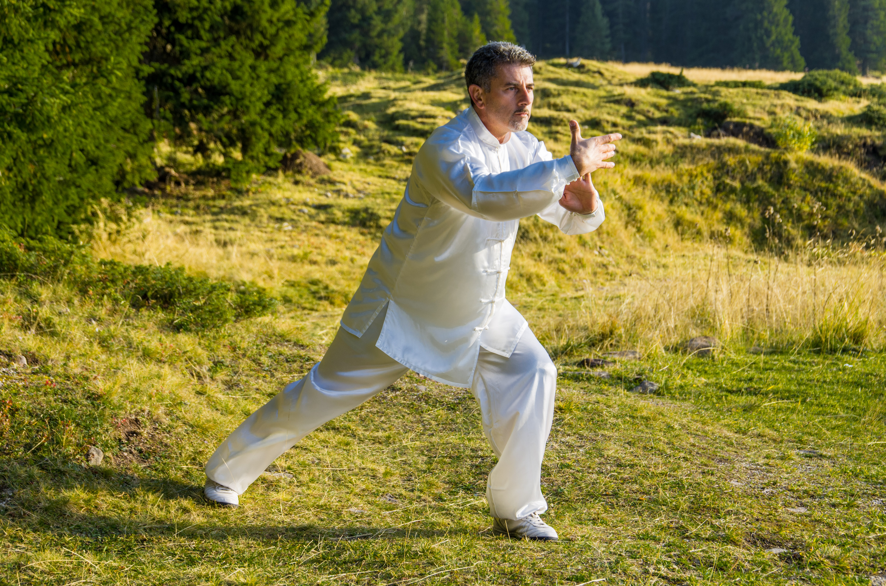

Il Maestro
Fin dall'adolescenza nutrivo un forte interesse verso l'arte marziale. C'era qualcosa che mi affascinava, mi intrigava, mi appassionava quando vedevo in tv film, documentari o in qualche occasione delle esibizioni in piazza, queste persone che si muovevano in modo non comune. All'epoca non sapevo ben riconoscere il Karate dal Kung Fu o dalle altre arti marziali, ma quello che mi portava lontano con la fantasia era la sensazione che esse mi trasmettevano: la capacità di dominio verso se stessi, la vera forza insita nell'uomo, sembravano essere invincibili. Dai 18 ai 20 anni la situazione era diventata più difficile, ero entrato nella crisi religiosa, ho fatto svariati viaggi interessandomi alle altre religioni, con l'aiuto di esperti nel settore e il confronto mi portava alla curiosità di quello che veniva professato. Volevo mollare tutto ciò che avevo per andare nelle montagne del Tibet, entrare in un monastero a pregare e ad allenarmi con i Monaci, era diventato il mio pensiero primario, miravo all'idea di avere un Maestro, un Maestro con il quale poter parlare delle mie cose, condividere con lui i miei pensieri, i miei perché, con la certezza di sentirmi compreso e di poter ricevere un insegnamento saggio per il mio percorso.
 Non mi interessava che la religione professata era diversa dalla mia, volevo andare in quel luogo pieno di mistero, di fascino e misticismo. A 20 anni, ricordo una sera dopo una meditazione, come un fulmine a ciel sereno, l'idea di andarmene in Tibet non era più prioritaria. Pensai che dovevo fare qui le mie esperienze e così è tuttora. Trascorsero svariati anni e nel mio percorso feci varie esperienze di pratica di alcune discipline quali Karate, Ju Jitzu, Yoga e altro. Quando conobbi la Scuola delle 9 armonie di Senigallia, nelle Marche, dove veniva e viene praticata l'Arte Marziale del Kung Fu e del T’ai C’hi Chuan tradizionale cinese e tibetano, scelsi la strada della Maestria, circa 13 anni di studio con il Maestro Maurizio Cini. Il Kung Fu e il T’ai C’hi Chuan sono degli "strumenti" che l'essere umano può utilizzare per conoscere se stesso, per entrare nel proprio infinito, conoscere la "via delle virtu", quella via che permette l'incontro e lo scontro con se stessi e da all'uomo la possibilità di trovare la propria essenza.
 Si diventa ricercatori e scopritori, si ascolta la rabbia per ritrovare la pace, come recita una delle tante spiegazioni sul T’ai C’hi Chuan. E' un "gioco degli opposti", si cerca e si trova, si apre e si chiude, tutto questo si chiama esperienza. Attraverso questa maturiamo perché nasce una nuova consapevolezza che è la nostra vera crescita.
Il nostro vero avversario siamo noi stessi, se conosciamo la nostra rabbia, conosciamo anche quella del compagno, se sappiamo volerci bene, sappiamo farlo anche con gli altri.
La passione è importante in quest’arte marziale, tuttavia serve aprire il nostro cuore, nel momento in cui consideriamo la pratica non come un dovere verso ciò che abbiamo scelto, sapendo quanto sia importante, ma come una gioia verso quello che arriverà praticando quest’Arte, che ci aiuta a capire, ci forgia e ci porta a compiere il giusto lavoro, mente corpo e spirito all'unisono verso quello che ci serve, verso quello che è il nostro necessario.
Come nella vita, così nelle arti marziali, non si finisce mai di studiare.
Si diventa ricercatori e scopritori, si ascolta la rabbia per ritrovare la pace, come recita una delle tante spiegazioni sul T’ai C’hi Chuan. E' un "gioco degli opposti", si cerca e si trova, si apre e si chiude, tutto questo si chiama esperienza. Attraverso questa maturiamo perché nasce una nuova consapevolezza che è la nostra vera crescita.
Il nostro vero avversario siamo noi stessi, se conosciamo la nostra rabbia, conosciamo anche quella del compagno, se sappiamo volerci bene, sappiamo farlo anche con gli altri.
La passione è importante in quest’arte marziale, tuttavia serve aprire il nostro cuore, nel momento in cui consideriamo la pratica non come un dovere verso ciò che abbiamo scelto, sapendo quanto sia importante, ma come una gioia verso quello che arriverà praticando quest’Arte, che ci aiuta a capire, ci forgia e ci porta a compiere il giusto lavoro, mente corpo e spirito all'unisono verso quello che ci serve, verso quello che è il nostro necessario.
Come nella vita, così nelle arti marziali, non si finisce mai di studiare.